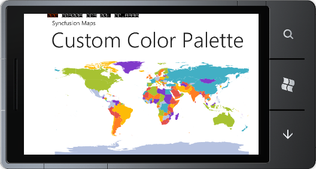

With CustomColorPalette, color palette for the Map can be customized. CurrentMapColorPalette is used to set custom color palette. CurrentMapColorPalette is the collection of MapColorPalette.
The following code illustrates how to apply custom ColorPalette for the Map in code behind.
|
[C#] MapControl Map = new MapControl(); Map.EnableColorPalette = true; ShapeFileLayer shapeLayer = new ShapeFileLayer(); shapeLayer.Uri = "WindowsPhoneApplication1.ShapeFiles.wv.shp"; Map.ColorPalette = ColorPalettes.CustomColorPalette; Map.Layers.Items.Add(shapeLayer); Map.LayeredContent = shapeLayer; LayoutRoot.Children.Add(map); Map.CurrentMapColorPalette.Add(new MapColorPallette { ShapeFill = conv.ConvertFromString("#FFE5514A") as SolidColorBrush }); Map.CurrentMapColorPalette.Add(new MapColorPallette { ShapeFill = conv.ConvertFromString("#FFFF7E23") as SolidColorBrush }); Map.CurrentMapColorPalette.Add(new MapColorPallette { ShapeFill = conv.ConvertFromString("#FFFDBB07") as SolidColorBrush }); Map.CurrentMapColorPalette.Add(new MapColorPallette { ShapeFill = conv.ConvertFromString("#FFA7C232") as SolidColorBrush }); Map.CurrentMapColorPalette.Add(new MapColorPallette { ShapeFill = conv.ConvertFromString("#FFB6C2E0") as SolidColorBrush }); Map.CurrentMapColorPalette.Add(new MapColorPallette { ShapeFill = conv.ConvertFromString("#FF803ACA") as SolidColorBrush }); Map.CurrentMapColorPalette.Add(new MapColorPallette { ShapeFill = conv.ConvertFromString("#FF42AFC4") as SolidColorBrush });
|

Figure 18: CustomColorPalette